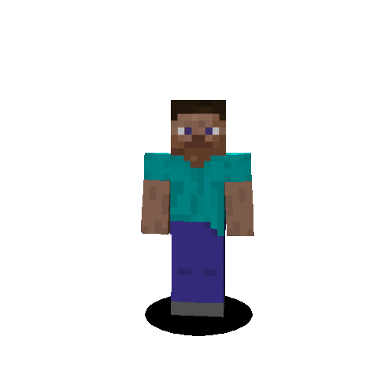
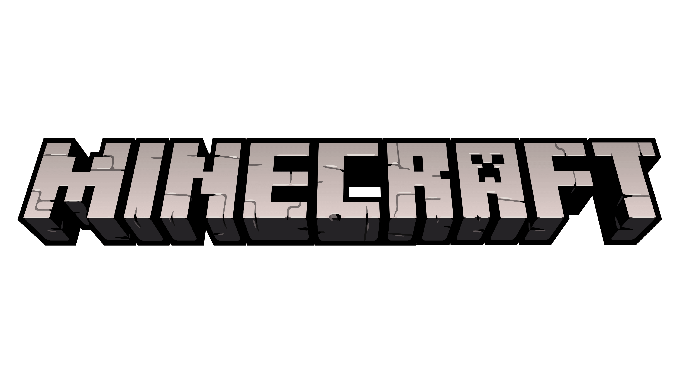

Minecraft es uno de los videojuegos más influyentes y populares de la historia. Fue creado originalmente por Markus Persson (“Notch”) y desarrollado por Mojang Studios. El juego apareció por primera vez en 2009 y fue lanzado oficialmente en 2011. Más tarde, la compañía fue adquirida por Microsoft en 2014.
Minecraft es un videojuego de construcción, exploración y supervivencia en un mundo generado de forma procedural. Todo el entorno está formado por bloques cúbicos que representan materiales como tierra, piedra, madera, agua, minerales y muchos otros elementos.
El juego no tiene un único objetivo obligatorio, aunque existe una historia principal relacionada con derrotar al dragón del End.
Minecraft fue inspirado por juegos como:
Notch desarrolló una versión temprana en pocos días y comenzó a publicar actualizaciones constantes.
El jugador debe:
La supervivencia incluye:
El jugador tiene:
Es usado para:
Diseñado para mapas personalizados donde:
Permite:
Los biomas son regiones con diferentes climas y recursos.
Minecraft tiene tres dimensiones principales.
Es el mundo principal:
Nether es una dimensión infernal:
Sirve para:
The End es la dimensión final:
Aquí vive: